Що таке комп'ютер?
Комп’ютер — це електронний
пристрій, який маніпулює інформацією або даними. Він має можливість зберігати,
отримувати та обробляти дані.
Можливо, ви вже знаєте, що за допомогою комп’ютера можна друкувати документи,
надсилати електронні листи, грати в ігри та переглядати веб-сторінки. Ви також можете
використовувати його для редагування або створення електронних таблиць,
презентації та навіть відео. Він складається з апаратного та програмного забезпечення.
 Перегляньте відео нижче, щоб дізнатися про різні типи комп’ютерів.
Апаратне забезпечення
це будь-яка частина комп’ютера, яка має
фізичну структуру, наприклад клавіатуру чи мишу. Він також містить усі внутрішні частини комп’ютера, які ви можете побачити на зображенні нижче.
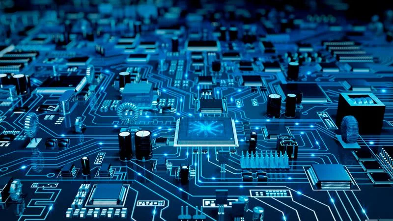
Перегляньте відео нижче, щоб дізнатися про різні типи комп’ютерів.
Апаратне забезпечення
це будь-яка частина комп’ютера, яка має
фізичну структуру, наприклад клавіатуру чи мишу. Він також містить усі внутрішні частини комп’ютера, які ви можете побачити на зображенні нижче.
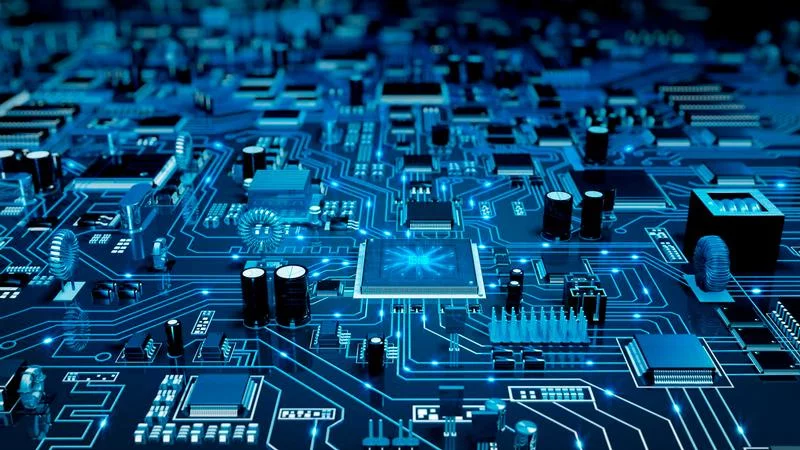
Програмне забезпечення
це будь-який набір інструкцій , який повідомляє апаратному забезпеченню,
що і як це робити. Приклади програмного забезпечення
включають веб-браузери, ігри та текстові процесори.

Основні компоненти комп'ютера:
- Процесор (CPU): 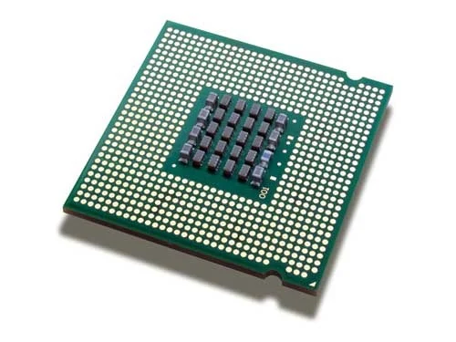
- Мозок комп'ютера, який виконує інструкції програм.
- Характеризується кількістю ядер, тактовою частотою та кеш-пам'яттю.
- Впливає на швидкість роботи комп'ютера.
- Оперативна пам'ять (RAM):
- Зберігає дані, які використовуються процесором в даний момент.
- Характеризується об'ємом.
- Впливає на швидкість роботи комп'ютера та можливість багатозадачності.
- Жорсткий диск (HDD) або твердотільний накопичувач (SSD):
- Зберігає операційну систему, програми та дані користувача.
- Характеризується об'ємом, швидкістю читання/запису та типом (HDD або SSD).
- SSD значно швидші, ніж HDD, але й дорожчі.
- Відеокарта: 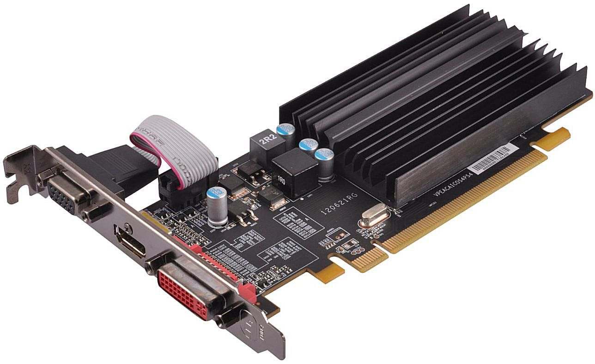
- Обробляє та виводить зображення на монітор.
- Характеризується типом, об'ємом пам'яті та частотою.
- Впливає на якість зображення та можливість запускати комп'ютерні ігри.
- Монітор:
- Відображає зображення, яке генерує відеокарта.
- Характеризується розміром, роздільною здатністю, типом матриці (IPS, TN) та частотою оновлення.
- Впливає на комфортність роботи та якість зображення.
- Клавіатура:
- Пристрій для введення тексту та команд.
- Характеризується типом розкладки, типом клавіш (мембранні, механічні) та наявністю додаткових кнопок.
- Миша:
- Пристрій для керування курсором на екрані.
- Характеризується типом сенсора (оптичний, лазерний), роздільною здатністю та наявністю додаткових кнопок.

 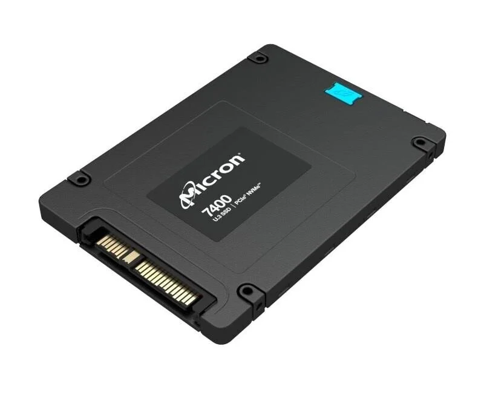
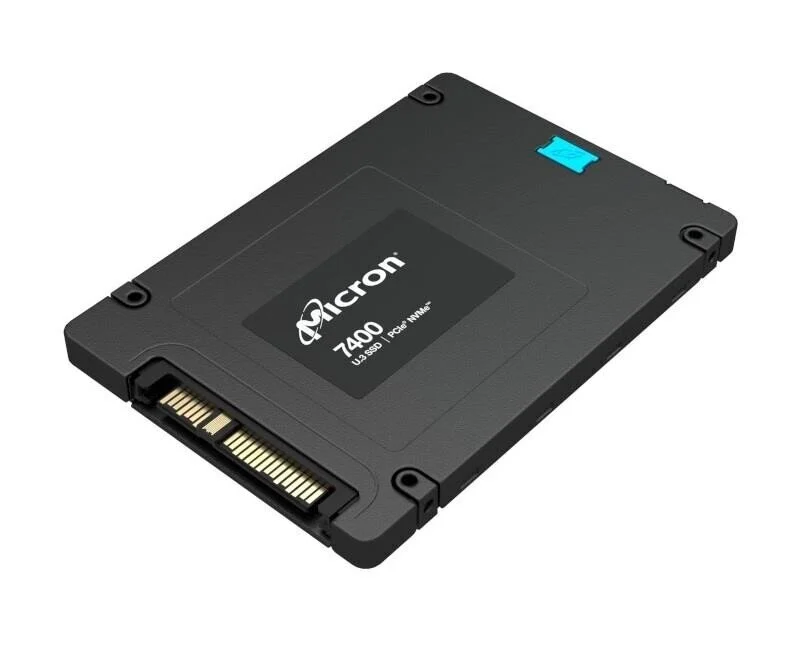


Історія комп'ютерів
Перші комп'ютери були громіздкими та дорогими, займали цілі кімнати й могли обслуговувати лише невелику кількість людей. З часом завдяки розвитку технологій розмір комп'ютерів значно зменшився, а їхня потужність і доступність зросли. Сьогодні персональні комп'ютери може мати практично кожна людина, а їхні можливості вражають уяву.
| Рік | Подія |
|---|---|
| 1946 | Створення першого електронного комп'ютера ENIAC |
| 1977 | Випуск Apple II, одного з перших персональних комп'ютерів |
| 1981 | Випуск IBM PC, який став стандартом для персональних комп'ютерів |
| 1993 | Випуск першого веб-браузера Mosaic |
| 2001 | Випуск першого iPod, революційного портативного музичного плеєра |
| 2004 | Випуск Facebook, який став найпопулярнішою соціальною мережею у світі |
| 2005 | Випуск YouTube, який став найпопулярнішим веб-сайтом для обміну відео |
| 2007 | Випуск iPhone, революційного смартфона, який змінив мобільний світ |
| 2008 | Випуск Android, операційної системи для смартфонів, яка стала найпопулярнішою у світі |
| 2010 | Випуск iPad, планшетного комп'ютера, який став дуже популярним для читання, перегляду веб-сторінок та ігор |
| 2011 | Випуск Google+, соціальної мережі Google, яка не змогла конкурувати з Facebook |
| 2012 | Випуск Raspberry Pi, недорогого комп'ютера, який популяризував програмування та електроніку |
| 2015 | Випуск Apple Watch, розумного годинника, який став дуже популярним для відстеження фізичної активності та отримання повідомлень |
| 2021 | Випуск Metaverse, віртуальної платформи, яка об'єднує віртуальну реальність, доповнену реальність та Інтернет |
| 2022 | Штучний інтелект (ШІ) стає все більш потужним і використовується в багатьох галузях, таких як медицина, фінанси та транспорт |
Види комп'ютерів
Існує багато різних типів комп'ютерів, які можна класифікувати за розміром, потужністю, призначенням та іншими характеристиками.
За розміром:
-
Суперкомп'ютери:
 Суперкомп'ютери - це найпотужніші обчислювальні системи,
що використовуються для наукових досліджень, моделювання клімату,
шифрування даних та інших складних обчислень.
Суперкомп'ютери - це найпотужніші обчислювальні системи,
що використовуються для наукових досліджень, моделювання клімату,
шифрування даних та інших складних обчислень. Мейнфрейми:
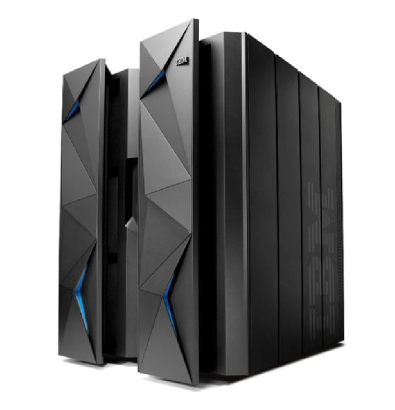 Мейнфрейми - це великі комп'ютерні системи, які використовуються для обробки великих обсягів даних у банках, страхових компаніях, телекомунікаційних компаніях та інших великих організаціях.Сервери:
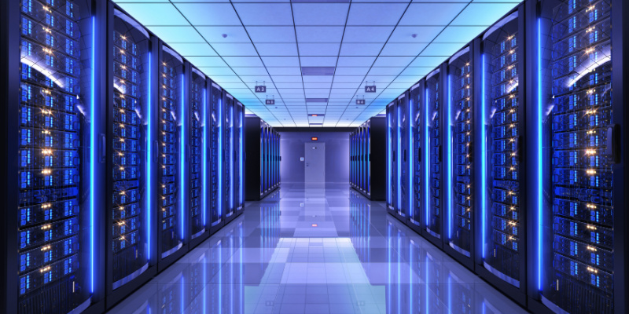 Сервери - це потужні комп'ютери, які надають доступ до ресурсів (файлів, принтерів, програм) для інших комп'ютерів у мережі.Персональні комп'ютери (ПК):
 Персональні комп'ютери (ПК) - це найпоширеніший тип
комп'ютерів, що використовуються для роботи, навчання, розваг тощо.
Персональні комп'ютери (ПК) - це найпоширеніший тип
комп'ютерів, що використовуються для роботи, навчання, розваг тощо.Планшетні комп'ютери:
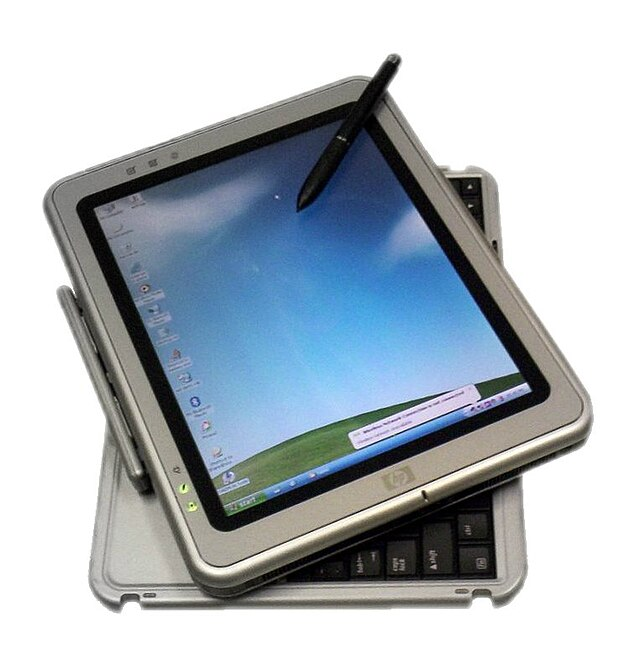 Планшетні комп'ютери - це мобільні пристрої з сенсорним екраном, які використовуються для перегляду веб-сторінок, читання книг, перегляду фільмів тощо.Смартфони:
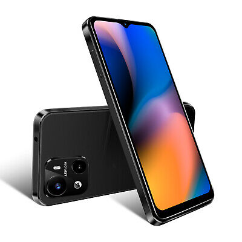 Смартфони - це мобільні телефони, які можуть виконувати багато функцій, що раніше були доступні лише на комп'ютерах, такі як перегляд веб-сторінок, гра в ігри та інші. Часто їх називають міні-комп'ютерами.
За призначенням:
Ігрові комп'ютери:
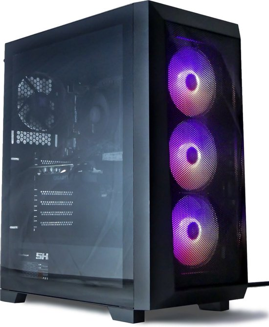 Ігрові комп'ютери оснащені потужними графічними картами та призначені для запуску комп'ютерних ігор.Мультимедійні комп'ютери:
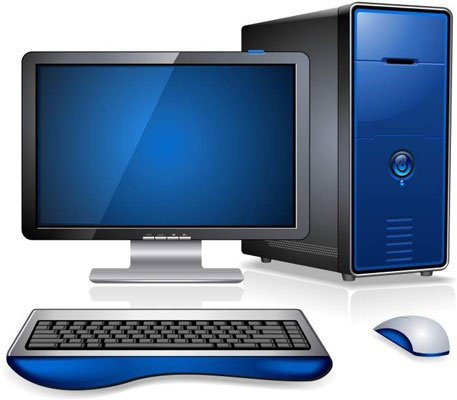 Мультимедійні комп'ютери призначені для перегляду фільмів, прослуховування музики, редагування фото та відео.Нетбуки:
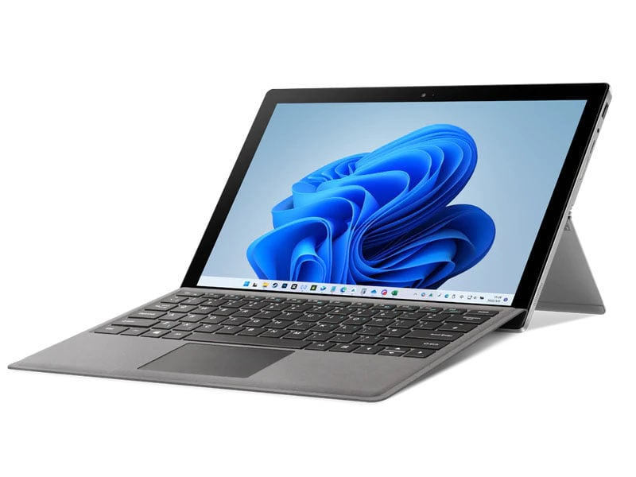 Нетбуки - це легкі та компактні ноутбуки, призначені для роботи в Інтернеті та мобільного використання.Хромбуки:
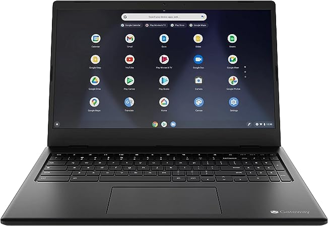 Хромбуки працюють на операційній системі Chrome OS і використовуються для роботи в Інтернеті та хмарних додатках.
За потужністю:
Настільні комп'ютери:
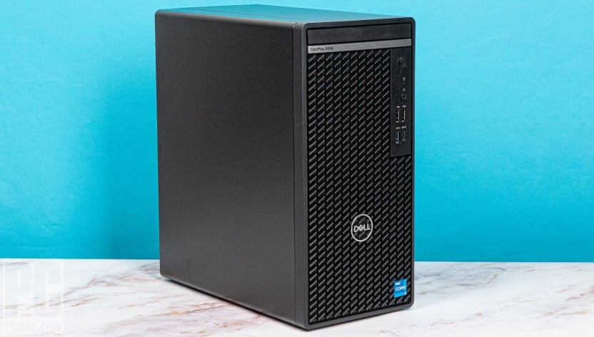 Настільні комп'ютери широко використовуються на роботі, вдома та в навчальних закладах. Вони призначені для розміщення на столі і зазвичай складаються з кількох частин, включаючи корпус, монітор, клавіатуру та мишу.Ноутбуки:
 Ноутбук - це портативний комп'ютер, який працює від батарейок. Вони дозволяють використовувати комп'ютер практично будь-де завдяки своїй портативності.
Ноутбук - це портативний комп'ютер, який працює від батарейок. Вони дозволяють використовувати комп'ютер практично будь-де завдяки своїй портативності.
Ультрабуки:
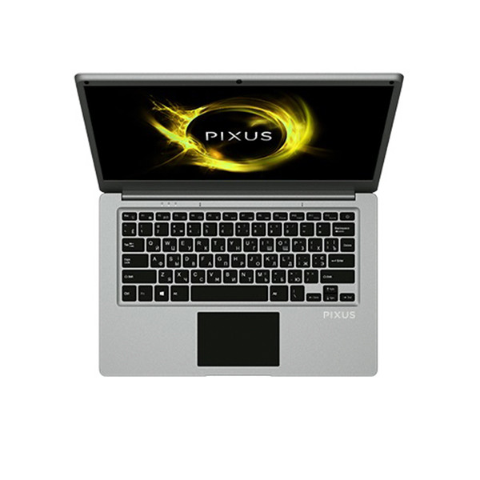 Ультрабуки - це тонкі та легкі ноутбуки, які поєднують в собі стильний дизайн і високу продуктивність. Ультрабуки відрізняються високою швидкістю роботи, широкими можливостями підключення та тривалим часом автономної роботи, що робить їх популярними серед користувачів, які цінують мобільність та продуктивність.